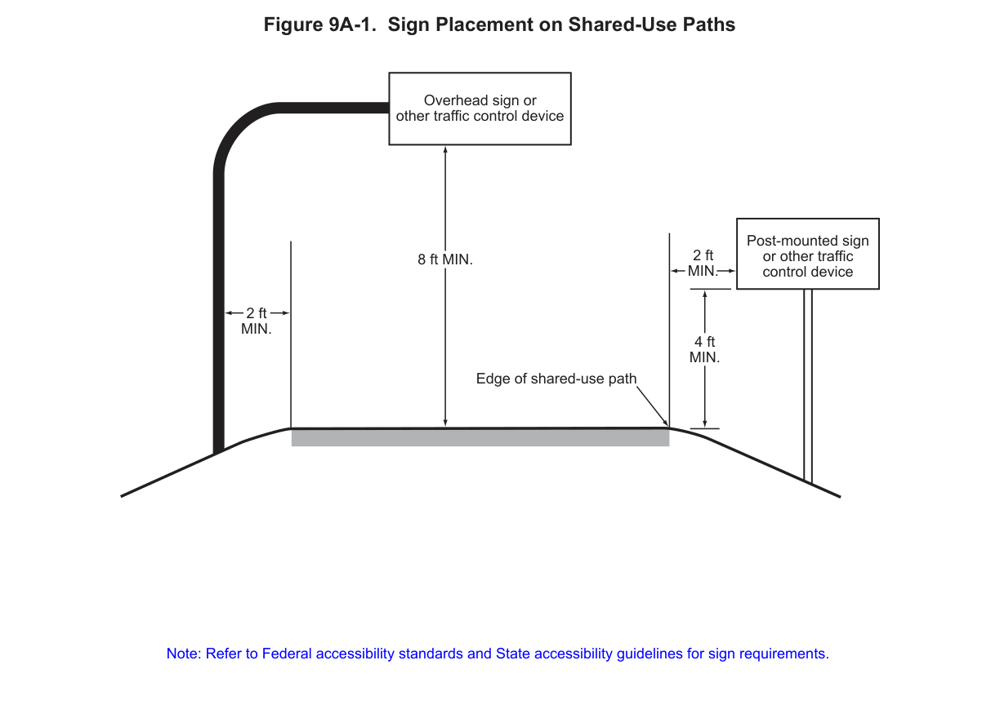

Part 9 · Traffic Control for Bicycle Facilities · Chapter 9A
General
Foundational provisions for all bicycle-facility traffic control devices: scope of Part 9, the standardization principle for bicycle signing and marking, minimum bicycle sign/plaque sizes, and sign placement clearances on shared-use paths.
9A.01General
- 01Part 9 covers signs and pavement markings specifically related to bicycle operation on roadways, separated bikeways, and shared-use paths. In jurisdictions where small, low-speed, human- or electric-powered transportation devices (often referred to as micromobility devices) are allowed to use bicycle facilities, they can be regulated by the signs, pavement markings, and other traffic control devices related to bicycle operations described in this Part. Part 4 contains information on highway traffic signals and bicycle signal faces. Part 6 contains information on work zones for bicycle facilities and the mitigation of impacts to bicycle travel through work zones.
- 02Definitions and acronyms pertaining to Part 9 are provided in Sections 1C.02 and 1C.03.
- 03When operating on a roadway, bicycles are typically defined as vehicles and the operator of a bicycle is given the same rights and duties as an operator of a motor vehicle. Bicyclists are also vulnerable road users who have little to no protection from crash forces.
- 04Designing bicycle facilities and the traffic control devices on those facilities in a manner that encourages predictable behavior and compliance with traffic laws from all roadway users can improve safety and increase public acceptance of bicyclists by other road users. The misuse of traffic control devices for improperly designed bicycle facilities, or non-uniform applications, can produce ineffective or counterproductive results. Section 1D.01 provides more information on the importance of uniformity of traffic control devices.
- 05The "Bikeway Selection Guide" (FHWA-SA-18-077), FHWA, provides information on the design and configuration of bicycle facilities.
- 05aRefer to FHWA's List of Known Errors for an error in the heading between Paragraphs 5 and 6. Refer to Section 1A.04 for more details.
- 06The operation of bicycles is generally allowed on rights-of-way open to motor vehicles, even if the bicycle-specific traffic control devices outlined in Part 9 are not present.
- 07All signs, signals, and markings, including those on bicycle facilities, should be properly maintained to command respect from all road users. When installing signs and markings on bicycle facilities, an agency should be designated to maintain these devices.
In practice, this section establishes that bicycle facility devices are not a separate legal regime — bicyclists remain subject to standard rules of the road, and Part 9 devices exist to make bicycle-specific conditions (turn boxes, separated bikeways, shared-use path crossings) legible to all users, not to create novel or locally-branded treatments.
9A.02Standardization of Application for Signing
- 01The installation of nonstandard signing on bikeways, or modifying standard signing in a manner inconsistent with Chapter 2A of this Manual to draw special attention, educate users or the community, or brand a bicycle facility, can contribute to problems with public acceptance and enforcement.
- 02Bicycle signs shall comply with the provisions of this Manual for standard shape, legend, and color.
- 03All signs installed on bikeways shall be retroreflective, including those on shared-use paths and bicycle lane facilities.
- 04Where signs serve both bicyclists and other road users, vertical mounting height and lateral placement shall be as provided in Sections 2A.15 and 2A.16 of this Manual.
- 05Where used on a shared-use path, no portion of a sign or its support should be placed less than 2 feet laterally from the near edge of the path, or less than 8 feet vertically over the entire width of the shared-use path (see Figure 9A-1).
- 06Mounting height for post-mounted signs on shared-use paths should be a minimum of 4 feet, measured vertically from the bottom of the sign to the elevation of the near edge of the path surface (see Figure 9A-1).
- 07Signs for the exclusive use of bicyclists should be located so that other road users are not confused by them.
- 08The clearance for overhead signs on shared-use paths should be adjusted when appropriate to accommodate path users requiring more clearance, such as equestrians, or typical maintenance or emergency vehicles.

- 08aCalifornia regulatory and guide signs for bicycle facilities are shown in Figure 9B-1(CA) and Figure 9D-1(CA), respectively.
- 09If the sign or plaque applies to motorists and bicyclists, then the size shall be as shown for conventional roads in Tables 2B-1, 2C-1, 2D-1, and 8B-1, as applicable.
- 10The minimum sign and plaque sizes for signs specific to bicycle-only facilities and shared-use paths shall be those shown in Table 9A-1. These sizes shall be used only for signs and plaques installed specifically for bicyclist applications.
- 11Larger sizes of signs and plaques may be used on bicycle facilities when appropriate (see Section 2A.07).
- 12Any diamond-shaped warning sign that is placed such that it is applicable only to bicyclists or pedestrians on shared-use paths or separated bicycle lanes may be 18 x 18 inches.
- 13Except for size, the design of signs and plaques for bicycle facilities should be identical to that provided in this Manual for signs and plaques for streets and highways.
- 14Uniformity in design of bicycle signs and plaques includes shape, color, symbols, arrows, wording, lettering, and illumination or retroreflectivity.
In practice, the "off roadway" vs. "roadway" size columns in Table 9A-1 matter operationally: a sign on a shared-use path physically outside the traveled way can use the smaller off-roadway minimum, while the same sign designation mounted where motorists must also read it (e.g., at a roadway/bikeway intersection) must use the larger roadway-column minimum.
9A.03Standardization of Application for Markings
- 01Markings indicate the separation of lanes for road users, assist the bicyclist by indicating assigned travel paths, indicate correct position for traffic control signal actuation, and provide advance information for turning and crossing maneuvers.
- 02Pavement marking word messages, symbols, and/or arrows, and/or colored pavement may be used in bikeways where appropriate.
- 03Consideration should be given to selecting pavement marking materials that will minimize loss of traction for bicycles under wet conditions.
- 04Pavement markings on bicycle facilities that must be visible at night or in low-light conditions shall be retroreflective unless the markings are adequately visible under provided lighting.
- 05The colors, width of lines, patterns of lines, symbols, and arrows used for marking bicycle facilities shall be as defined in Part 3.
- 05aOn State highways, marking materials shall conform to Sections 84-2.02 and 84-3.02 of the Standard Specifications published by Caltrans.
- 06Section 3H.06 contains information on green-colored pavement for use with certain traffic control devices for bicycles and bicycle facilities.
- 07Section 9E.17 contains information on the use of channelizing devices to emphasize the pavement markings for bicycle facilities.
- 08Raised pavement markers should not be used on bicycle lanes or shared-use paths.
- 09If used around bicycle facilities, raised pavement markers should not be placed immediately adjacent to the travel path of bicyclists in a bicycle lane or on a shared-use path.
- 10Using raised pavement markers creates a collision potential for bicyclists by placing fixed objects immediately adjacent to the travel path of the bicyclist. Raised pavement markers can cause a bicyclist to lose balance and fall, and might not be visible to a bicyclist who is following another bicyclist.
9A.101(CA)Traffic Controls for Bicycle Facilities at Rail Crossings
- 01Any bicycle facility traversing an at-grade railroad crossing shall conform to Part 8.
Table 9A-1. Bicycle Facility Sign and Plaque Minimum Sizes
Minimum sign/plaque sizes (inches, width x height) for devices installed specifically for bicyclist applications. The "Off Roadway" column covers shared-use paths and bicycle-only facilities outside the roadway; the "Roadway" column applies within the traveled way. Where a sign or plaque applies to both motorists and bicyclists, use the conventional-road sizes in Tables 2B-1, 2C-1, 2D-1, or 8B-1 instead. Dashes (—) indicate the designation is not applicable in that column.
| Sign or Plaque | Sign Designation | Section | Off Roadway | Roadway |
|---|---|---|---|---|
| Stop | R1-1 | 9B.01 | 18 x 18 | — |
| Yield | R1-2 | 9B.01 | 18 x 18 x 18 | — |
| Bike Lane (plaque) | R3-5hP | 9B.04 | — | 30 x 12 |
| Except Bicycles (plaque) | R3-7bP | 9B.02 | — | 24 x 12 |
| Advance Intersection Lane Control with Bike Lane | R3-8x Series | 9B.03 | — | Varies x 36 |
| Bike Lane | R3-17 | 9B.04 | — | 24 x 18 |
| Ahead, Ends (plaques) | R3-17aP, R3-17bP | 9B.04 | — | 24 x 9 |
| Movement Restriction | R4-1,2,3,7,16 | 9B.24 | 12 x 18 | — |
| Begin Right Turn Lane Yield to Bikes | R4-4 | 9B.05 | — | 36 x 30 |
| Bicycle Passing Clearance | R4-19 | 9B.15 | — | 30 x 30 |
| Bicycle Wrong Way | R5-1b | 9B.06 | 12 x 18 | 12 x 18 |
| No Motor Vehicles | R5-3 | 9B.07 | 24 x 24 | 24 x 24 |
| No Bicycles | R5-6 | 9B.08 | 18 x 18 | — |
| On Freeway (plaque) | R5-10dP | 9B.17 | — | 24 x 6 |
| No Parking Bike Lane | R7-9,9a | 9B.09 | — | 12 x 18 |
| Back-In Parking | R7-10 | 9B.10 | — | 12 x 18 |
| No Pedestrian Crossing | R9-3 | 9B.08 | 18 x 18 | — |
| Ride With Traffic (plaque) | R9-3cP | 9B.06 | 12 x 12 | 12 x 12 |
| Bicycles Use Pedestrian Signal | R9-5 | 9B.11 | 12 x 18 | 12 x 18 |
| Bicycles Yield to Pedestrians | R9-6 | 9B.12 | 12 x 18 | 12 x 18 |
| Shared-Use Path Restriction | R9-7 | 9B.13 | 12 x 18* | — |
| No Skaters | R9-13 | 9B.08 | 18 x 18 | 18 x 18 |
| No Equestrians | R9-14 | 9B.08 | 18 x 18 | 18 x 18 |
| No Snowmobiles | R9-15 | 9B.08 | 18 x 18 | 18 x 18 |
| No All-Terrain Vehicles | R9-16 | 9B.08 | 18 x 18 | 18 x 18 |
| Bicycles Allowed Use of Full Lane | R9-20 | 9B.14 | — | 30 x 30 |
| Bicycles Use Shoulder Only | R9-21 | 9B.16 | — | 24 x 30 |
| Bicycles Must Exit | R9-22 | 9B.17 | — | 24 x 30 |
| Bicycle All Turns from Bike Lane | R9-23 | 9B.18 | — | 12 x 18 |
| Bicycle Left Turn from Bike Lane | R9-23a | 9B.18 | — | 12 x 18 |
| Bicycle Left Turn Must Use Turn Box | R9-23b, R9-23c | 9B.18 | — | 12 x 18 |
| Bicycle All Turns | R9-24,24a | 9B.19 | — | 24 x 6 |
| Bicycle U and Left Turns | R9-25,25a,25b | 9B.19 | — | 24 x 9 |
| Bicycle U Turn | R9-26,26a,26b | 9B.19 | — | 24 x 6 |
| Bicycle Left Turn | R9-27,27a,27b | 9B.19 | — | 24 x 6 |
| Push Button for Green | R10-4 | 9B.20 | 9 x 12 | 9 x 12 |
| Left Turn Yield to Bicycle | R10-12b | 9B.21 | — | 30 x 36 |
| Bicycle Detector | R10-22 | 9B.20 | 12 x 18 | 12 x 18 |
| Bike Push Button for Green Light | R10-24 | 9B.20 | 9 x 15 | 9 x 15 |
| Push Button for Warning Lights – Wait for Gap | R10-25 | 9B.20 | 9 x 12 | 9 x 12 |
| Bike Push Button for Green Light (arrow) | R10-26 | 9B.20 | 9 x 15 | 9 x 15 |
| Bicycle Signal | R10-40, R10-40a, R10-41, R10-41a, R10-41b, R10-41c | 9B.22 | 12 x 21 | 12 x 21 |
| Grade Crossing (Crossbuck) | R15-1 | 9B.23 | 24 x 4.5 | 48 x 9 |
| Number of Tracks (plaque) | R15-2P | 9B.23 | 13.5 x 9 | 27 x 18 |
| Look | R15-8 | 9B.23 | 18 x 9 | 36 x 18 |
| Horizontal Alignment | W1-1,2,3,4,5 | 9C.01 | 18 x 18 | — |
| Large Arrow | W1-6,7 | 9C.01 | 24 x 12 | — |
| Intersection Warning | W2-1,2,3,4,5 | 9C.02 | 18 x 18 | — |
| Stop Ahead, Yield Ahead, Signal Ahead | W3-1,2,3 | 9C.08 | 18 x 18 | — |
| Narrow Bridge | W5-2 | 9C.08 | 18 x 18 | — |
| Path Narrows | W5-4a | 9C.08 | 18 x 18 | — |
| Hill | W7-5 | 9C.08 | 18 x 18 | 30 x 30 |
| Bump, Dip | W8-1,2 | 9C.03 | 18 x 18 | — |
| Pavement Ends | W8-3 | 9C.03 | 18 x 18 | — |
| Bicycle Surface Condition | W8-10 | 9C.03 | 18 x 18 | 30 x 30 |
| Slippery When Wet (plaque) | W8-10P | 9C.03 | 12 x 9 | 12 x 9 |
| Bicycle Lane Ends | W9-5 | 9C.07 | — | 30 x 30 |
| Bicycles Merging | W9-5a | 9C.07 | 18 x 18 | 30 x 30 |
| Grade Crossing Advance Warning | W10-1 | 9C.08 | 24 Dia. | 36 Dia. |
| No Train Horn (plaque) | W10-9P | 9C.08 | 18 x 12 | 30 x 24 |
| Skewed Crossing | W10-12 | 9C.08 | 18 x 18 | 36 x 36 |
| Bicycle | W11-1 | 9C.04, 9C.08 | 18 x 18 | — |
| Pedestrian | W11-2 | 9C.08 | 18 x 18 | — |
| Trail Crossing | W11-15 | 9C.04 | 18 x 18 | — |
| Trail Crossing (plaque) | W11-15P | 9C.04 | 18 x 12 | — |
| Low Clearance | W12-2 | 9C.08 | 18 x 18 | — |
| Playground | W15-1 | 9C.08 | 18 x 18 | — |
| In Road (plaque) | W16-1P | 9C.08 | — | 18 x 12 |
| In Street (plaque) | W16-1aP | 9C.08 | — | 18 x 12 |
| XX Feet (2-line plaque) | W16-2P | 9C.04 | 18 x 12 | — |
| XX Ft (1-line plaque) | W16-2aP | 9C.04 | 12 x 9 | — |
| Downward Diagonal Arrow (plaque) | W16-7P | 9C.04 | 12 x 9 | — |
| Ahead (plaque) | W16-9P | 9C.04 | — | 24 x 12 |
| Except Bicycles (plaque) | W16-20P | 9C.05 | — | 24 x 12 |
| 2-Way Bicycle Cross Traffic (plaque) | W16-21P | 9C.06 | — | 24 x 12 |
| Object Marker Type 3 | OM3-L,C,R | 9C.09 | 6 x 18 | 12 x 36 |
| Destination (1 line) | D1-1, D1-1a | 9D.01 | Varies x 6 | — |
| Bicycle Destination (1 line) | D1-1b, D1-1c | 9D.01 | Varies x 6 | Varies x 6 |
| Destination (2 lines) | D1-2, D1-2a | 9D.01 | Varies x 12 | — |
| Bicycle Destination (2 lines) | D1-2b, D1-2c | 9D.01 | Varies x 12 | Varies x 12 |
| Destination (3 lines) | D1-3, D1-3a | 9D.01 | Varies x 18 | — |
| Bicycle Destination (3 lines) | D1-3b, D1-3c | 9D.01 | Varies x 18 | Varies x 18 |
| Distance (1 line) | D2-1 | 9D.01 | Varies x 6 | — |
| Bike Route Destination and Distance (1 Line) | D2-1a | 9D.01 | Varies x 12 | Varies x 12 |
| Distance (2 line) | D2-2 | 9D.01 | Varies x 9 | — |
| Bike Route Destination and Distance (2 Lines) | D2-2a | 9D.01 | Varies x 15 | Varies x 15 |
| Distance (3 line) | D2-3 | 9D.01 | Varies x 12 | — |
| Bike Route Destination and Distance (3 Lines) | D2-3a | 9D.01 | Varies x 18 | Varies x 18 |
| Street Name (1 line) | D3-1 | 9D.01 | Varies x 6 | Varies x 6 |
| Street Name (2 lines) | D3-1 | 9D.01 | Varies x 12 | Varies x 12 |
| Bicycle Parking Area Directional | D4-3 | 9D.09 | 18 x 12 | 18 x 12 |
| Bicycle-Sharing Station Directional | D4-4 | 9D.09 | 12 x 18 | 12 x 18 |
| Bicycle Lockers Directional | D4-4a | 9D.09 | 12 x 18 | 12 x 18 |
| Reference Location (1-digit) | D10-1 | 9D.10 | 6 x 9 | — |
| Intermediate Reference Location (2-digits) | D10-1a | 9D.10 | 6 x 15 | — |
| Reference Location (2-digits) | D10-2 | 9D.10 | 6 x 15 | — |
| Intermediate Reference Location (3-digits) | D10-2a | 9D.10 | 6 x 21 | — |
| Reference Location (3-digits) | D10-3 | 9D.10 | 6 x 21 | — |
| Intermediate Reference Location (4-digits) | D10-3a | 9D.10 | 6 x 24 | — |
| Bike Route | D11-1 | 9D.02 | 24 x 18 | 24 x 18 |
| Bike Route (plaque) | D11-1bP | 9D.03 | 18 x 6 | 18 x 6 |
| Bike Route with Destination | D11-1c | 9D.02 | 24 x 18 | 24 x 18 |
| Shared-Use Path Destination (1 line) | D11-10a | 9D.12 | Varies x 6* | — |
| Shared-Use Path Destination (2 lines) | D11-10b | 9D.12 | Varies x 12* | — |
| Shared-Use Path Destination (3 lines) | D11-10c | 9D.12 | Varies x 18* | — |
| Shared-Use Path Destination and Distance (1 line) | D11-10d | 9D.12 | Varies x 6* | — |
| Shared-Use Path Destination and Distance (2 lines) | D11-10e | 9D.12 | Varies x 12* | — |
| Shared-Use Path Destination and Distance (3 lines) | D11-10f | 9D.12 | Varies x 18* | — |
| Bicycles Directional | D11-11 | 9D.11 | 18 x 18 | — |
| Pedestrians Directional | D11-12 | 9D.11 | 18 x 18 | — |
| Skaters Directional | D11-13 | 9D.11 | 18 x 18 | — |
| Equestrians Directional | D11-14 | 9D.11 | 18 x 18 | — |
| Bicycle Turn Box Guide Signs | D11-20, D11-20a | 9D.13 | — | 12 x 18 |
| State or Local Bicycle Route | M1-8, M1-8a | 9D.05 | 12 x 18 | 18 x 24 |
| Non-Numbered Bicycle Route | M1-8b, M1-8c | 9D.06 | 12 x 12 | 18 x 18 |
| U.S. Bicycle Route | M1-9 | 9D.07 | 12 x 18 | 18 x 24 |
| Bicycle Route Auxiliary Signs (plaque) | M2-1P, M3-1P,2P,3P,4P, M4-1P,1aP,2P,3P,5P,6P,7P,7aP,8P,14P | 9D.08 | 12 x 6 | 12 x 6 |
| Bicycle Route Arrow Signs (plaque) | M5-1P, 2P, M6-1P, 2P, 3P, 4P, 5P, 6P, 7P | 9D.08 | 12 x 9 | 12 x 9 |
* For use on shared-use paths only. Notes: (1) Includes shared-use paths and bicycle-only facilities outside of the roadway. (2) If a sign or plaque applies to motorists and bicyclists, size shall be as shown for conventional roads in Tables 2B-1, 2C-1, 2D-1, or 8B-1. (3) Larger signs may be used when appropriate. (4) Dimensions are width x height in inches. (5) Separated bicycle lanes (see definition in Section 1C.02) can be located within the roadway or outside the roadway; the minimum sign sizes for these facilities are shown in the off-roadway and roadway columns, respectively.
Table 9A-1(CA). California Bicycle Facility Sign and Plaque Minimum Sizes
| Sign or Plaque | Sign Designation | Section | Off Roadway | Roadway |
|---|---|---|---|---|
| Memorial Bikeway | G12-3(CA) | 9D.01 | Varies x 12 | — |
| Push or Wave at Button to Turn on Warning Lights | R10-3k(CA) | 2B.58, 9B.20 | 9 x 12 | 9 x 12 |
| Bike Path Exclusion | R44-1(CA) | 9B.07 | 12 x 24 | — |
| Bicycles Motor-Driven Cycles Must Exit (with Arrow) | R44B(CA) | 9B.17 | — | 30 x 36 |
| Bike Turn-Out XX Feet | SR64A(CA) | 9B.101(CA) | — | 30 x 30 |
| Bike Turn-Out (with arrow) | SR64B(CA) | 9B.101(CA) | — | 30 x 30 |
Notes: (1) Includes shared-use paths and bicycle-only facilities outside of the roadway. (2) If a sign or plaque applies to motorists and bicyclists, size shall be as shown for conventional roads in Tables 2B-1, 2C-1, 2D-1, or 8B-1. (3) Larger signs may be used when appropriate. (4) Dimensions are width x height in inches. (5) Separated bicycle lanes can be located within or outside the roadway, with minimum sizes per the respective column. (6) Other sign sizes are available; see California Sign Specifications.
★ Key Takeaways — Chapter 9A
- Part 9 devices regulate bicycles, separated bikeways, and shared-use paths — and can also govern permitted micromobility devices — but do not replace the underlying rule that bicycles are vehicles subject to normal traffic law.
- Nonstandard or "branded" bicycle signing that departs from Chapter 2A shape/legend/color conventions undermines recognition and enforcement; bicycle signs must use standard shapes, legends, and colors, and must be retroreflective.
- On shared-use paths, signs/supports need a minimum 2 ft lateral clearance and 8 ft overhead clearance; post-mounted signs need a minimum 4 ft mounting height above the path surface (Figure 9A-1) — with additional clearance for equestrians or maintenance/emergency vehicles where relevant.
- Table 9A-1 sets minimum sizes for bicycle-only signs and plaques, split by off-roadway vs. roadway installation; signs serving both motorists and bicyclists must instead use the conventional-road size tables (2B-1, 2C-1, 2D-1, 8B-1).
- Pavement markings on bicycle facilities follow Part 3 colors/patterns and must be retroreflective unless adequately lit; raised pavement markers should be avoided on bicycle lanes and shared-use paths due to fall/loss-of-control risk.
- Bicycle facilities crossing at-grade railroad tracks must conform to Part 8 (California-specific Section 9A.101(CA)).